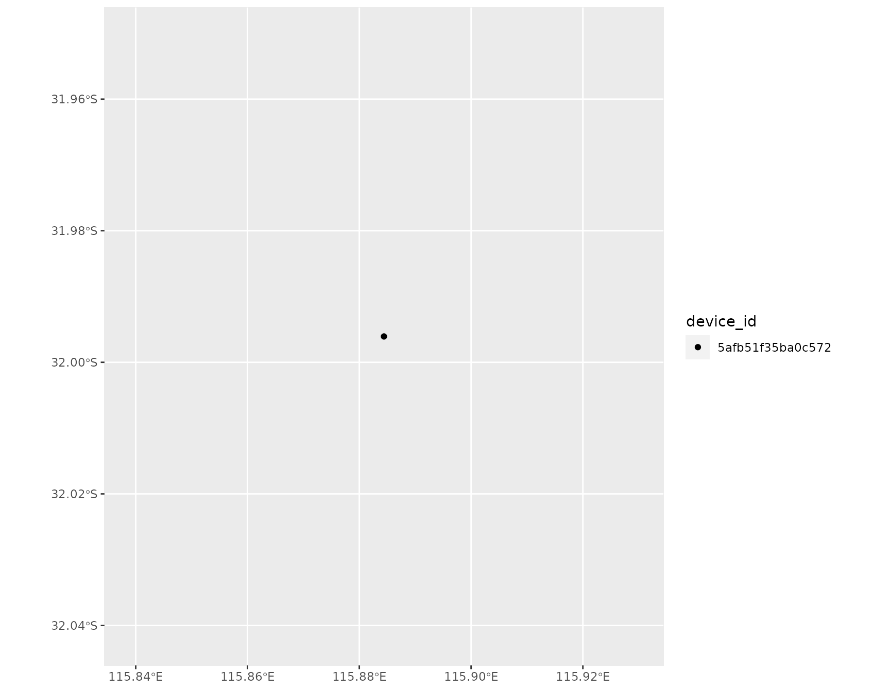
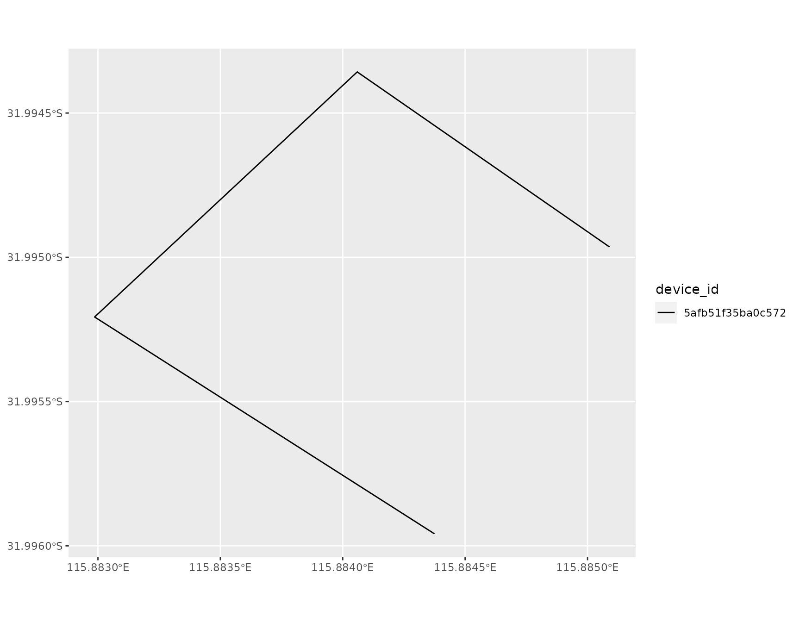
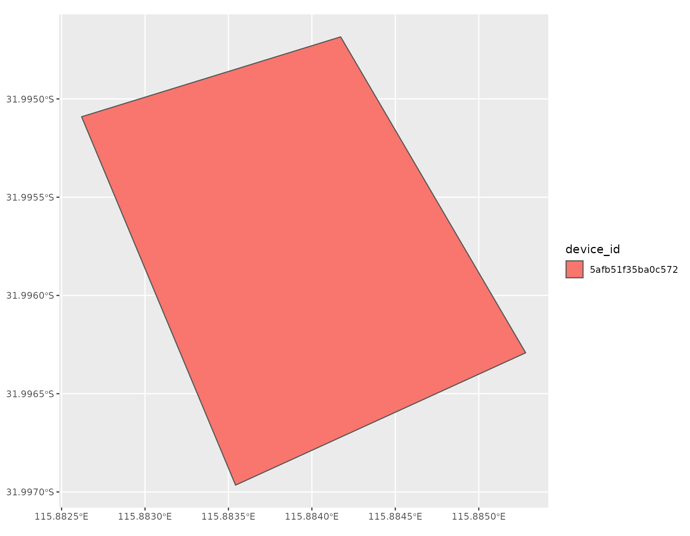

For forms with spatial types, such as geopoint, geotrace, or geoshape, ruODK gives two options to access the captured spatial data.
Firstly, to make spatial data as simple and accessible as possible, ruODK extracts the lat/lon/alt/acc from geopoints, as well as from the first coordinate of geotraces and geoshapes into separate columns. This works for both GeoJSON and WKT. The extracted columns are named as the original geofield appended with _latitude, _longitude, _altitude, and _accuracy, respectively.
Secondly, this vignette demonstrates how to turn the spatial data types returned from ODK Central into spatially enabled objects. To do so, we have to address two challenges.
The first challenge is to select which of the potentially many spatial fields which an ODK form can capture shall be used as the primary geometry of a native spatial object, such as an sf SimpleFeature class. If several spatial fields are captured, it is up to the user to choose which field to use as primary geometry.
The second difficulty is that the parsed data from ODK Central is a plain table (tbl_df) in which some columns contain spatial data. WKT is stored in text columns, GeoJSON is stored in list columns. This format is not recognised as a standard spatial input format.
library(ruODK)
# Visualisation
library(leaflet)
library(ggplot2)
library(lattice)
# library(tmap) # Suggested but not included here yet
# Spatial
can_run <- require(sf) && require(leafem) && require(mapview)
# Fix https://github.com/r-spatial/mapview/issues/313
# option 'fgb' requires GDAL >= 3.1.0
if(require(mapview)) mapview::mapviewOptions(fgb = FALSE)Data
The data shown in this vignette is hosted on the ODK Central Sandbox as one of the forms used in ruODK package tests. The form contains every spatial widget supported by ODK Build for every supported spatial field type.
With working credentials to the ODK Sandbox, we can download the data directly.
# Set ruODK defaults to an ODK Central form, choose tz and verbosity
ruODK::ru_setup(
url = get_test_url(),
pid = get_test_pid(),
fid = get_test_fid_wkt(),
un = get_test_un(),
pw = get_test_pw(),
odkc_version = 0.8,
tz = "Australia/Perth",
verbose = TRUE)
data_wkt <- ruODK::odata_submission_get(wkt = TRUE)
data_gj <- ruODK::odata_submission_get(wkt = FALSE)To allow users to build this vignette without credentials to the ODK Central Sandbox, ruODK provides above form data also as package data.
Map geopoints
We can turn data with a text column containing WKT into a SimpleFeatures object.
In addition, we can leave the tbl_df as non-spatial object, and instead use the separately extracted latitude, longitude, altitude, and accuracy individually e.g. to plot a Leaflet map.
geo_sf_point <- geo_wkt %>% sf::st_as_sf(wkt="point_location_point_gps")
# ODK Collect captures WGS84 (EPSG:4326)
sf::st_crs(geo_sf_point) <- 4326
# Mapview using sf
# See also further information under heading "Outlook"
mapview::mapview(geo_sf_point,
col.regions = sf::sf.colors(10),
map.types = c("Esri.WorldShadedRelief", "OpenTopoMap.AU"))
# Leaflet using sf
leaflet::leaflet(data = geo_sf_point) %>%
leaflet::addTiles() %>%
leaflet::addMarkers(label = ~ device_id, popup = ~ device_id)Map geotraces (lines)
We use sf::st_as_sf on a text column containing a WKT geotrace.
geo_sf_line <- geo_wkt %>% sf::st_as_sf(wkt="path_location_path_gps")
# ODK Collect captures WGS84 (EPSG:4326)
sf::st_crs(geo_sf_line) <- 4326
# Mapview using sf
mapview::mapview(geo_sf_line, col.regions = sf::sf.colors(10))
# You can show either first extracted coordinate components from plain tbl_df
# or show the full polygons using {leafem}
# See https://r-spatial.github.io/mapview/articles/articles/mapview_06-add.html
leaflet::leaflet(data = geo_wkt) %>%
leaflet::addTiles() %>%
leaflet::addMarkers(
lng = ~ path_location_path_gps_longitude,
lat = ~ path_location_path_gps_latitude,
label = ~ device_id,
popup = ~ device_id)%>%
leafem::addFeatures(geo_sf_line, label = ~device_id, popup = ~ device_id)Map geoshapes (polygons)
Again, we’ll use sf::st_as_sf but select a WKT geoshape column.
geo_sf_poly <- geo_wkt %>% sf::st_as_sf(wkt="shape_location_shape_gps")
# ODK Collect captures WGS84 (EPSG:4326)
sf::st_crs(geo_sf_poly) <- 4326
# Mapview using sf
mapview::mapview(geo_sf_poly, col.regions = sf::sf.colors(10))
# You can show either first extracted coordinate components from plain tbl_df
# or show the full polygons using {leafem}
# See https://r-spatial.github.io/mapview/articles/articles/mapview_06-add.html
leaflet::leaflet(data = geo_wkt) %>%
leaflet::addTiles() %>%
leaflet::addMarkers(
lng = ~ shape_location_shape_gps_longitude,
lat = ~ shape_location_shape_gps_latitude,
label = ~ device_id,
popup = ~ device_id) %>%
leafem::addFeatures(geo_sf_poly, label = ~device_id, popup = ~ device_id)Outlook
The above examples show how to turn spatial data into an sf object, and give very rudimentary visualisation examples.
See the sf homepage for more context and examples. The sf cheatsheet deserves a spatial mention. Review the options for mapview popups which are turned off in this quick demo, and the whole mapview homepage for a comprehensive overview of mapview. See the vignette “Get started” of the powerful visualisation package tmap, which supports sf objects and produces both printable and static maps as well as interactive leaflet maps.
There are several other good entry points for all things R and spatial, including but not limited to:
- The R Spatial CRAN Task View
- The RSpatial website
- Geospatial data in R and beyond by Barry Rowlingson
- GIS with R by Jesse Sadler
- GIS and mapping by Olivier Gimenez: Slides and code
The above list of examples and resources is far from comprehensive. Feel free to contribute or suggest other working examples for turning data from ruODK into spatial formats.